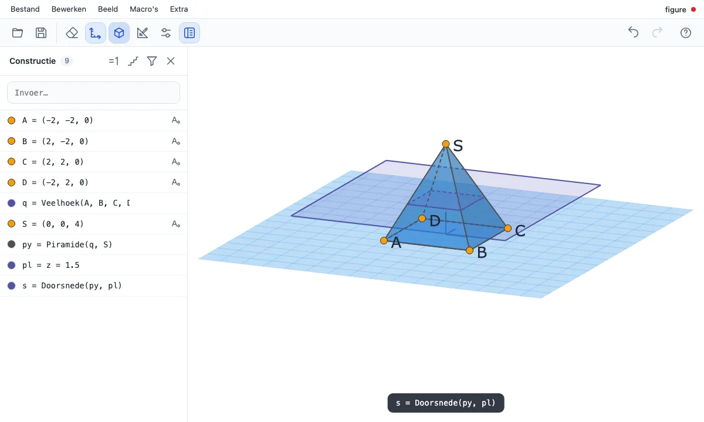

3D

Overschakelen naar 3D
- Een nieuwe figuur is vlak. 3D-weergave kantelt de camera: het vlak van de figuur wordt de vloer z = 0, het assenstelsel een assenkruis. Een tweede druk keert terug naar het vlak, met het vorige assenstelsel.
-
Terugkeren naar het vlak wordt geweigerd zolang een object
buiten het vlak z = 0 ligt; de aanwijzing noemt
het. Omgekeerd weigert een vlakke figuur elk object in de
ruimte (
A = (1, 2, 3), bol…). - Elke overschakeling is een stap van ongedaan maken.
- 3D-figuren uit DGPad, met vrije punten in het vlak van het scherm, hebben deze knop niet.
Weergave
- Draaien: rechtermuisknop, of één vinger op een lege plek. Verschuiven: linkermuisknop op een lege plek. Zoomen: scrollwiel.
- Beweeg twee vingers uit elkaar om in te zoomen en naar elkaar toe om uit te zoomen. Verschuif beide vingers samen om de weergave te verplaatsen.
- P: perspectief of parallelle projectie; S: vloer. Dezelfde instellingen in het tabblad Figuur.
- Verborgen delen (ribben, cirkels, rechten onder de vloer of achter een zijvlak) zijn gestippeld.
Construeren
-
Een klik op een lege plek maakt een punt op de vloer; via
het toetsenbord
S = (0, 0, 4). - Het palet krijgt de families Vlakken en Ruimtefiguren en twee cirkels; de ring van een punt biedt de bol aan.
- Spiegelingen, draaiingen, vermenigvuldigingen en verschuivingen transformeren ook een vlak, een bol of een veelvlak (Een object transformeren).
-
Elk gereedschap dat een vlak verwacht, aanvaardt de
vloer: er wordt een verborgen vlak
z = 0gemaakt en daarna hergebruikt. -
Formules lezen de drie coördinaten:
d(A, B)is de afstand in de ruimte.
| Object | Opdracht |
|---|---|
| Vlak |
Vlak(A, B, C),
Vlak(A, d),
EvenwijdigVlak(A, p),
LoodrechtVlak(A, d),
p = x + y + z = 3
|
| Loodlijn op een vlak | Loodlijn(A, p) |
| Bol |
Bol(O, A),
Bol(O, r)
|
| Cirkels |
Cirkel(d, P) met as d;
Cirkel(O, r, d) loodrecht op de
rechte d of evenwijdig aan het vlak d
|
| Ruimtefiguren |
Cilinder(A, B, r),
Kegel(A, B, r),
Kubus(A, B, C),
Prisma(p, P),
Piramide(p, S)
|
| Doorsnede |
Doorsnede(s, p): cirkel, kegelsnede
of veelhoek
|
| Uitslag |
Uitslag(c, f), f van 0 (dicht) tot
1 (plat)
|
| Snijpunten |
Snijpunt(d, p) punt,
Snijpunt(p, q) rechte,
Snijpunt(s, t) cirkel van twee
bollen
|
| Hoekpunten | Hoekpunt(c, k), k vanaf 1 |
Ruimtefiguren
- Een ruimtefiguur is één object: hij tekent zijvlakken en ribben (achteraan gestippeld) en verbergt wat erachter ligt. Je selecteert hem binnen zijn omtrek.
-
Kubus in twee klikken: twee punten van
eenzelfde vlak of veelhoek geven
Kubus(A, B, p, ±1), aan de kant naar de camera; twee punten op dezelfde hoogte gevenKubus(A, B, 1), erboven (−1: eronder). Anders wacht het gereedschap op een derde punt. De kubus wordt ongedefinieerd als [AB] niet meer evenwijdig is aan het vlak. - Het gereedschap Doorsnede neemt de ruimtefiguur en het vlak in willekeurige volgorde.
-
Een schuifknop als tweede argument van
Uitslaganimeert het openvouwen:f = Schuifknop(0, 1, 0),n = Uitslag(c, f).